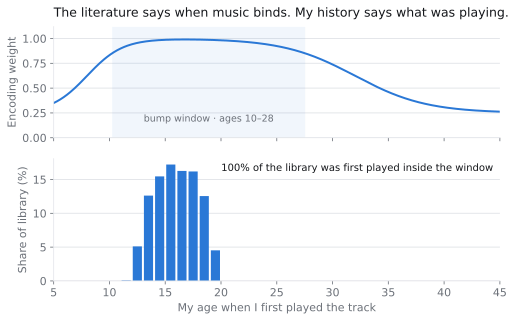
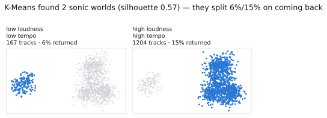
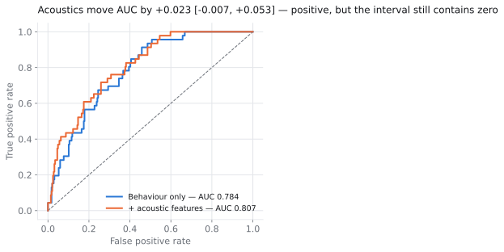
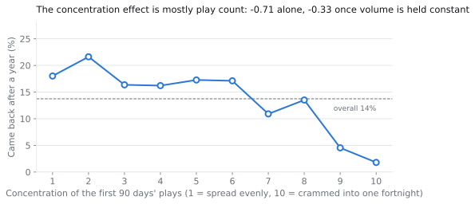
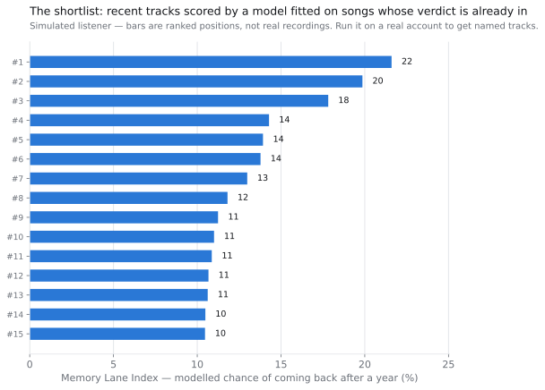

The question, and why it had to be replaced
The idea was to take my own Spotify history and predict which songs I'm playing now will trigger real nostalgia in twenty years — grounding it in the reminiscence bump, the finding that autobiographical memory over-represents things encoded roughly between ages 10 and 30, with music peaking in the mid-teens.
It took about an hour to realise the project as stated cannot be built. "Will this song give me chills in 2046" has no ground truth. Nobody holds a labelled dataset of songs that turned out to be core memories, mine least of all. A supervised classifier without labels is astrology with a train/test split, and no amount of feature engineering fixes a missing target.
So the first real decision was to replace the question with one the data can actually answer:
Which songs do I come back to after I've stopped listening to them? A track is a returner if it went dormant for a year or more and then came back for at least three more plays.
That isn't nostalgia. It's the behavioural shadow nostalgia casts in a listening log — and unlike nostalgia, it can be held out, scored and argued with.
Being precise about what the substitution costs matters more than the substitution itself. The sharpest loss: a song welded to something painful is one you might deliberately never play again. Maximum autobiographical weight, scored zero here. The label systematically misses avoidance, and nothing in the data fixes that.
The design falls out of the data's shape
A track needs 635 days of observation before its label means anything — 90 days to measure how it was first listened to, 365 of dormancy, 180 for a return to actually happen. Anything younger can't be labelled, and labelling it "never came back" would be labelling it for being new.
That constraint is the design rather than an annoyance: train on the old tracks whose verdict is already in, score the recent ones that haven't had their chance yet. The held-out recent tracks are exactly what the project is about — the modern songs. Every model feature comes from a track's first ninety days, so total play count, last-played date and lifetime span are all excluded for containing the answer.
The psychology named the decade and ranked nothing
The bump curve is the literature's strongest claim, and it holds up in the sense that matters least. For a 19-year-old with an account opened at 11, 100% of the library falls inside the encoding window.

Which is simultaneously the most striking thing the psychology says here and the reason it contributes nothing. A variable that takes one value cannot order a list. Across a whole lifetime the bump weight ranges from 0.35 to 0.99 and is genuinely informative; across one person's teens it is a constant.
So it's reported alongside the score and deliberately kept out of it. Folding it in would have changed no ordering while making the output look better grounded in the literature than it was — which is the specific way this kind of project usually goes wrong.
At 19 the bump isn't finished — roughly a third of the window is still ahead. This is a measurement taken mid-event rather than after it, which is the one thing about the project that can't be replicated by waiting.
Testing the acoustic hypothesis properly
The narrower, testable claim from the literature is that memory-evoking songs are more arousing and more emotionally intense. That gets a clean test: fit the model on behaviour alone, then on behaviour plus every acoustic feature, and bootstrap the difference in hold-out AUC on the same resampled rows — so the interval answers "did acoustics help" rather than "are these two numbers different".
First, K-Means over acoustic space, with k chosen by silhouette rather than asserted. It picked two.

Six genres went into the simulated library and two clusters came out. That's a real limitation on display rather than a tidy result: on overlapping acoustic blobs, K-Means recovers the dominant axis and not the taxonomy, and silhouette monotonically prefers the coarser split.

Behaviour alone reaches AUC 0.784. Every acoustic feature Spotify exposes adds +0.023, with a 95% interval of [−0.007, +0.053]. The interval contains zero.
The coefficients aren't nothing and they point where the literature says they should — cluster membership at +0.54, emotional intensity at +0.19, arousal at +0.19. But a coefficient with the right sign and a plausible size can still buy no ranking power, and separating those two things is most of what this project does. The honest phrasing is not distinguishable from zero at this sample size, which is a different claim from no effect — and one the write-up is careful not to overstate in either direction.
The simulated listener was reconfigured twice as the profile sharpened: first from a generic library to a genre-polarised one, then from a 13-year history to the 7.6 years a 19-year-old actually has. The acoustic point estimate moved +0.000 → +0.019 → +0.023 across those runs — and its interval contained zero in all three.
Two things follow, and they transfer further than the number does. How much audio features help depends on how genre-polarised the library is — two distant scenes give the acoustic block real variance to exploit, one scene doesn't. And a shorter history widens everything: dropping to 7.6 years pushed 19% of the library into the unlabelable bucket and widened the interval from 0.044 to 0.060.
The lever I rejected
The most tempting behavioural signal was concentration — how much of a song's first ninety days piled into its densest fortnight. The theory is clean: a song welded to one autumn should beat a song trickled evenly across a year. The raw numbers cooperate, with the top decile returning at 2% against 14% overall.

It doesn't survive control. Concentration correlates −0.59 with play count, and the coefficient falls from −0.71 to −0.33 once volume is held constant — a 53% attenuation. Songs crammed into a single fortnight mostly aren't bound to a moment. They were played four times, and four plays can only land in one fortnight.
This is the same shape as the confounded lever in my CDNOW retention analysis, and I check for it the same way now: any finding large enough to act on gets refit with the obvious confounder held constant before it reaches a recommendation.
What actually mattered was a units bug
The model's completion feature is ms_played / duration_ms —
what fraction of a track you play. That's fine until a chunk of the
library is 40–90 minute DJ sets and live mixes, where the metric stops
meaning anything. Twenty minutes of an hour-long set scores
0.28 — identical to bailing on a three-minute track after fifty
seconds.
Since completion is one of the strongest features, every mix in the library was being quietly pushed to the bottom of the ranking for the crime of being long. Not a modelling subtlety: a systematic, one-directional error against an entire format.
The fix is a judgment stated rather than tuned — engagement with long-form content is an absolute amount of time, not a fraction. Cap the denominator at eight minutes, and add an indicator so mixes carry their own baseline instead of distorting everyone else's.
That indicator became the strongest feature in the entire model at −1.41 log-odds — ahead of every acoustic feature, ahead of play count, ahead of skip rate.
The largest single improvement in a project about music psychology came from noticing a units problem in a denominator. I'd rather lead with that than with the model.
With the caveat attached: because the capped denominator saturates for long-form, that indicator is partly absorbing an inflated completion signal rather than measuring a property of mixes — and the fact that it grew from −0.83 to −1.41 when the history shortened is consistent with absorption rather than a stable effect. The eight-minute cap is also arbitrary in exactly the way the other constants are, and unlike them it isn't swept. It should be.
The output
The deliverable is the tracks too new to have proven themselves, ranked by how closely their first ninety days resemble the first ninety days of songs that turned out to be returners.

One rule in the selection is worth naming because it only shows up when you look at the output as a playlist rather than a ranking: a cap of two tracks per artist. A shortlist that's eleven songs by one band is a model telling you about one band. The cap relaxes rather than silently under-filling — someone who listens to seven artists on repeat can't fill thirty slots at two apiece — and the applied value is written to the output, because a list built at five per artist is a different object from one built at two.
What held still
Since the headline moved across three configurations, the thing worth publishing is what didn't move:
| Result | Across all three runs |
|---|---|
| Behavioural AUC | 0.78–0.79 every time |
| Acoustic confidence interval | Contained zero every time |
| Concentration under control | Rejected every time (53–61% attenuation) |
| Library inside the bump window | 93–100%, and never ranked within it |
| k chosen by silhouette | 2, every time |
Those are the claims I'd defend. The point estimates aren't, and the write-up says so in the same breath as it reports them.
A constraint worth knowing about
On 27 November 2024 Spotify closed /v1/audio-features,
/v1/audio-analysis, recommendations and preview URLs to
applications created after that date. A developer app you make today gets
a 403 on danceability, energy, valence and acousticness.
That endpoint is the acoustic half of this project, so the pipeline treats it as optional throughout: it asks, records the answer, runs either way, and reports which mode it ran in — because a result computed without acoustic features is a different result and shouldn't be allowed to look identical. Given the finding above, the acoustic-free run loses about two points of AUC, inside its own interval.
What I'd do differently
- The label misses avoidance, and I can't fix it. Songs too loaded to play are the strongest possible case of the thing I set out to find, and they score zero. Any honest version of this project needs a self-report layer the log can't provide.
- Train and score sets are separated by time. A model fitted on how someone listened at 15 is being applied to how they listen at 19, and taste drifts more over those four years than over any later four. Age is in the model, which absorbs some of it and none of it cleanly — the right fix is a temporal validation split, and I didn't build one.
- I'd sweep the eight-minute cap. I swept the four label constants and then introduced a fifth without giving it the same treatment, which is exactly the inconsistency I'd flag in someone else's work.
- Being 19 is the binding constraint, not the model. Seven and a half years of history leaves 19% of the library unlabelable and biases the return rate downward through right-censoring. The same account in five years clears the threshold for everything currently held out — waiting is a legitimate experiment here.